Live preview
Current UI recreation
dark
Electron shell
chat + composer
project files
01
Thread workspace
Default code/thread view with sidebar, timeline, composer, and docked project files.
02
Empty / new chat state
Centered landing logo and composer placement before the first message.

v0.1
03
Widgets board
Settings rows, selects, toggles, model menu, terminal and toast surfaces.